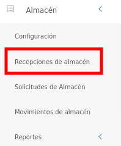
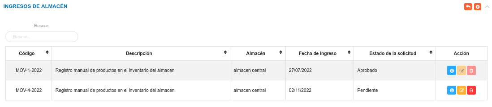
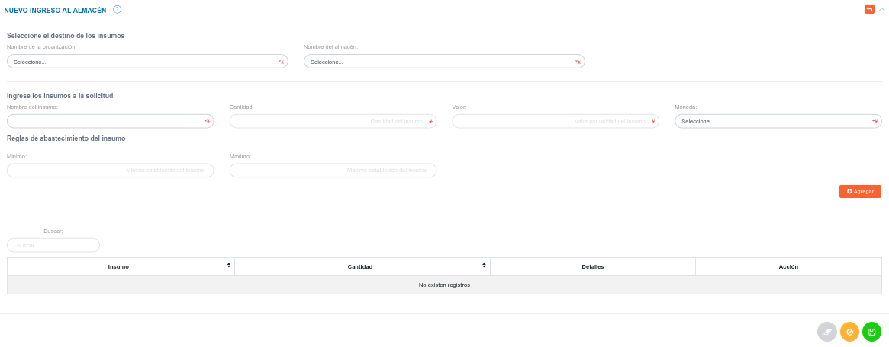
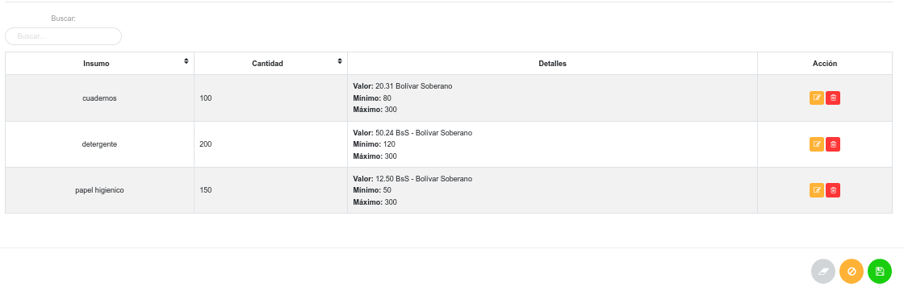
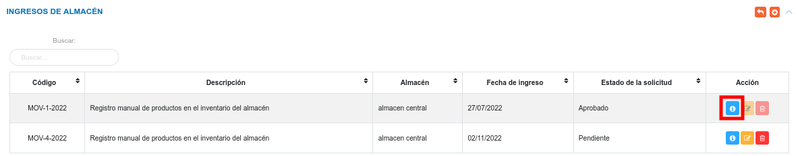
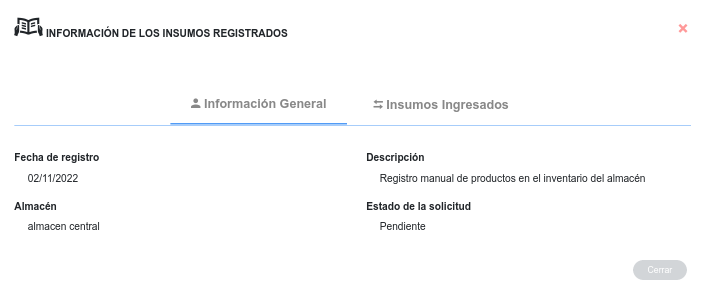
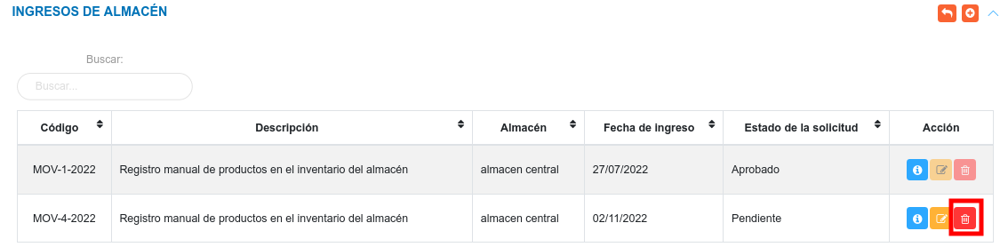
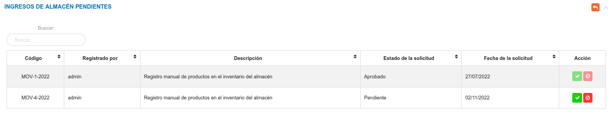

Gestión de Recepción e Ingreso de Artículos

Ingresos de almacén
Para acceder a esta funcionalidad, el usuario se dirige al menú lateral y se ubica en el módulo de almacén, luego debe pulsar la opción Recepciones de almacén, seguidamente el sistema muestra el panel central compuesta por las secciones Ingresos de Almacén e Ingresos de Almacén Pendientes.

En la sección Ingresos de Almacén, el sistema lista los registros asociados a los ingresos de artículos de almacén. También, mediante esta sección es posible crear una nuevo registro, ver información detallada del registro, editar y eliminar un registro.
Esta tabla de registros presenta las columnas: código, descripción, almacén, fecha de ingreso y estado de la solicitud.

Crear un nuevo ingreso de almacén
Esta funcionalidad permite registrar un nuevo ingreso de productos, es importante saber que los productos deben estar registrados previamente al igual que los almacenes, de no estar registrados es necesario ir a la configuración del módulo para ingresar esta información.
Para crear un nuevo registro
- Haciendo uso del botón Crear
 ubicado en la esquina superior derecha de esta sección, se procede a realizar una nueva solicitud.
ubicado en la esquina superior derecha de esta sección, se procede a realizar una nueva solicitud. - Se completa el formulario de registro de la sección Nuevo Ingreso al Almacén.
- Se agregan los productos a ingresar a la solicitud.
- Se presiona el botón Guardar
 ubicado al final de esta sección, y se verifica en la lista de registros en Ingresos de Almacén.
ubicado al final de esta sección, y se verifica en la lista de registros en Ingresos de Almacén. - Se Presiona el botón Cancelar
 para cancelar registro y regresar a la ruta anterior.
para cancelar registro y regresar a la ruta anterior. - Se Presiona el botón Borrar
 para eliminar datos del formulario.
para eliminar datos del formulario. - Si desea recibir ayuda guiada presione el botón
 .
. - Para retornar a la ruta anterior presione el botón
 .
.

Nota
Los tipos de moneda son registrados inicialmente en la Configuración General del Sistema KAVAC, específicamente en la opción "Monedas" de la sección de "Registros Comunes".
Información
En el formulario de registro de la sección Nuevo Ingreso al Almacén es posible agregar todos los productos deseados, a través del botón:

Cada producto agregado se muestra en un tabla de registros, en la parte inferior de dicha sección.

Los productos que han sido agregados pueden ser editados o eliminados, a través de los botones ubicados en la columna titulada Acción de la tabla de Productos Agregados.
Gestión de registros
Para Ver información detallada, Editar o Eliminar un registro se debe hacer uso de los botones ubicados en la columna titulada Acción de la tabla de registros en la sección de Ingresos de Almacén.

Consultar registros
- Presione el botón Consultar registro
 para un registro de interés.
para un registro de interés.

- Seguidamente, el sistema muestra una interfaz con la información ingresada previamente del registro de almacén.

Editar registros
- Presione el botón Editar registro
 para un registro de interés.
para un registro de interés. - Luego, el sistema muestra el formulario en forma de edición.
- Modifique la información que requiera.
- Presione el botón Guardar para registrar los cambios efectuados.
Eliminar registros
- Presione el botón Eliminar
 para un registro de interés.
para un registro de interés.

- Seguidamente, el sistema presenta un modal con un mensaje de confirmación de si está seguro de eliminar el ingreso de almacén, y muestra los botones Confirmar y Cancelar.
- Pulse el botón Confirmar si está seguro de eliminar el registro seleccionado.
- El sistema elimina el registro.
- Si pulsa el botón Cancelar, el sistema no ejecuta ninguna acción.
Ingresos de almacén pendientes
En esta sección, el sistema lista los registros de ingresos de almacén que el usuario realice, y estos toman el estado Pendiente, luego puede cambiar el estado como Rechazado, Aprobado o Entregado dependiendo de la acción que realice el analista de almacén.
Desde esta sección el analista de almacén o el usuario con permisos especiales sobre el módulo de almacén, puede Aceptar o Rechazar los ingresos que se encuentran en el estado Pendiente.

Para Aceptar o Rechazar un registro se debe hacer uso de los botones ubicados en la columna titulada Acción de la tabla de registros en la sección de Ingresos de Almacén Pendientes.

Aceptar solicitud
- Dirigirse al módulo de Almacén.
- Ingresar en Recepciones de Almacén.
- Ubicarse en la sección Ingresos de Almacén Pendientes.
- Haciendo uso del botón Aceptar
 ubicado en la columna titulada Acción de la tabla de registros se aprueba la solicitud.
ubicado en la columna titulada Acción de la tabla de registros se aprueba la solicitud.
Rechazar solicitud
- Dirigirse al módulo de Almacén.
- Ingresar en Recepciones de Almacén.
- Ubicarse en la sección Ingresos de Almacén Pendientes.
- Haciendo uso del botón Rechazar
 ubicado en la columna titulada Acción de la tabla de registros se rechaza la solicitud.
ubicado en la columna titulada Acción de la tabla de registros se rechaza la solicitud.